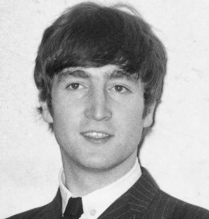

Integrantes
John Lennon
John Winston Ono Lennon MBE foi um cantor, compositor e ativista da paz britânico que fundou os Beatles, a banda de maior sucesso comercial na história da música popular. Sua parceria de composição com o colega de banda Paul McCartney foi uma das mais célebres da história da música.
Paul McCartney

James Paul McCartney é um cantor, compositor, multi-instrumentista, empresário, produtor musical, cinematográfico e ativista dos direitos dos animais britânico. McCartney alcançou fama mundial como membro da banda de rock britânica The Beatles, com John Lennon, George Harrison e Ringo Starr.
George Harrison
George Harrison foi um guitarrista, cantor, compositor, produtor musical e cinematográfico britânico que obteve fama internacional como guitarrista dos Beatles.
Ringo Starr
Richard Starkey Kt, MBE, mais conhecido pelo seu nome artístico Ringo Starr, é um músico, compositor e ator britânico, que ganhou fama como baterista dos Beatles.